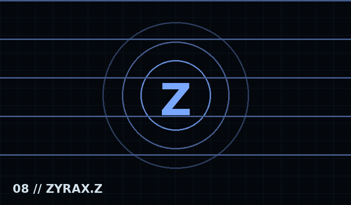
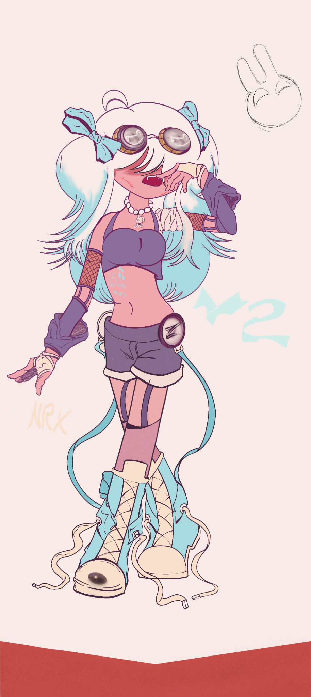
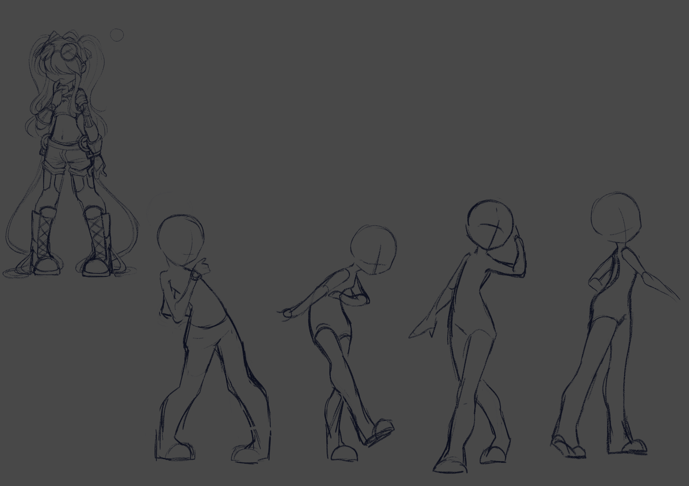
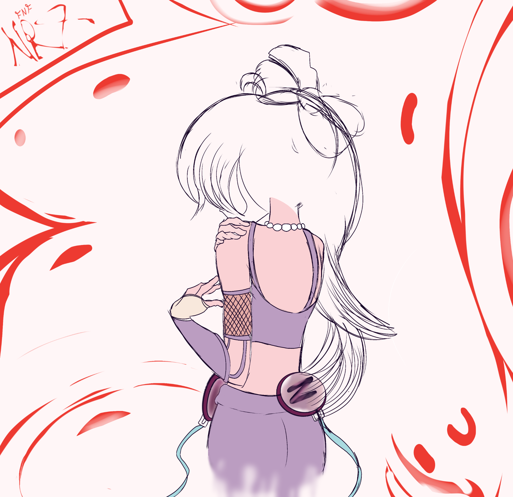
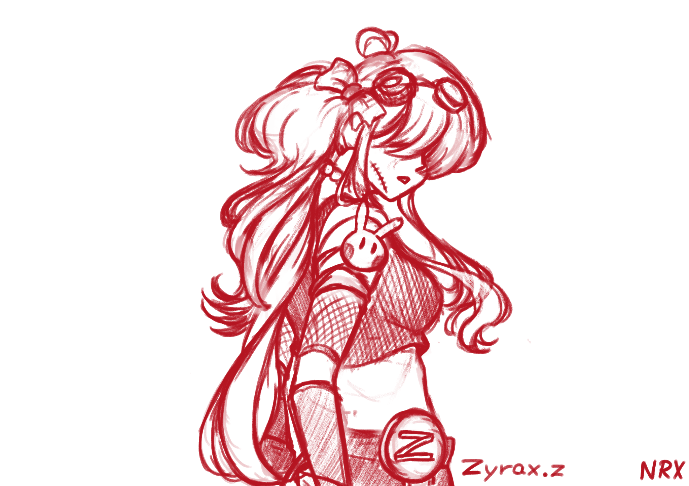
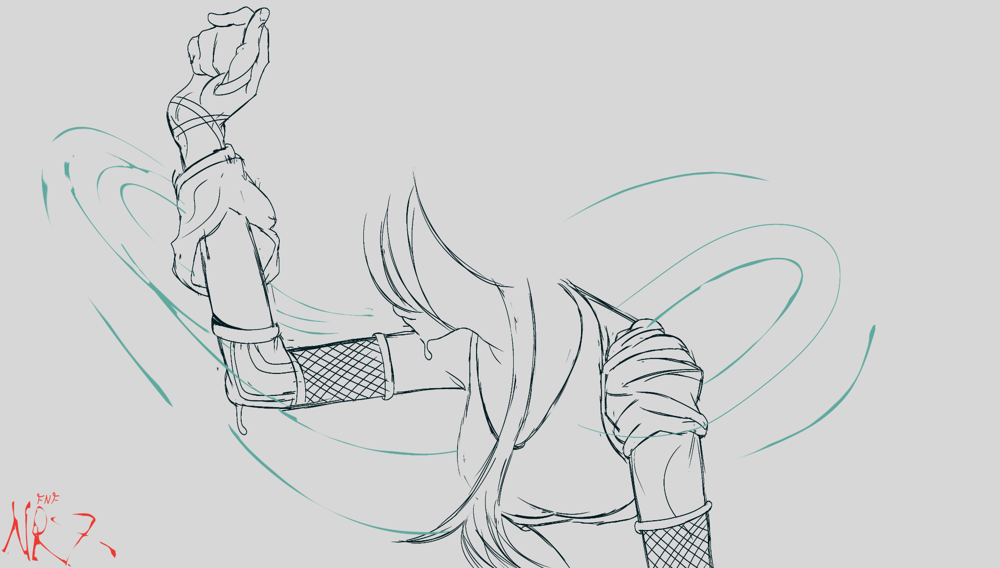

Entidad multiventana
Historia
Ella es el sonido.
Canciones
- Prestigio
- Soberanía

Ella es el sonido.

Ella es el sonido.
Figura principal de la Temporada 1 y primer punto de entrada a la ruptura de realidades de NRX.
02 // Temporada 2Personaje central de la Temporada 2, ligada a una atmósfera oceánica, inmensa y desconocida.
03 // Temporada 3Dúo central de la Temporada 3; dos presencias conectadas por una misma historia y una señal que se desvanece.
Archivo visual oficial para la pagina de Zyrax.z dentro de NRX Reality Break.

Llevo 2 anos en desarrollarla hasta obtener un buen resultado.

Create by nyokozzz.

Concepto solo de dibujo inspirado en otro.

Create by Alka_z1.

y0u ar#######